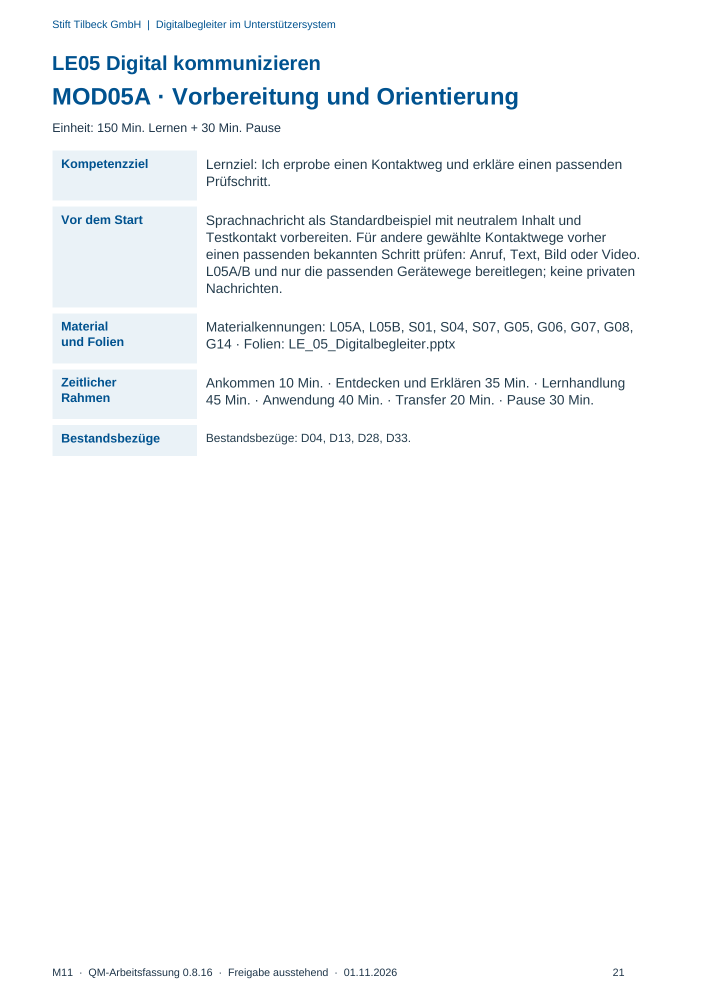
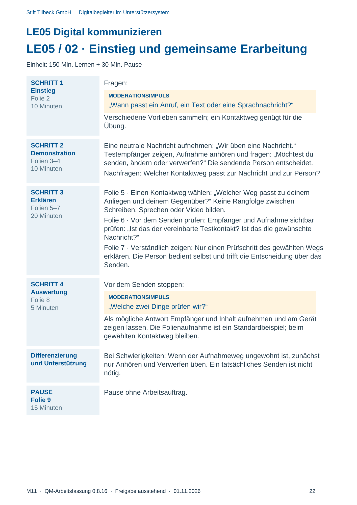
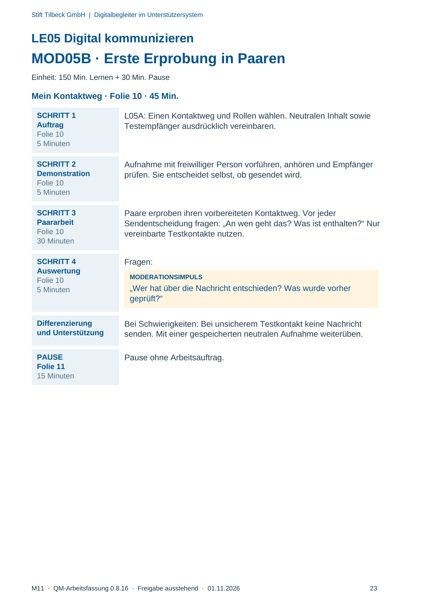
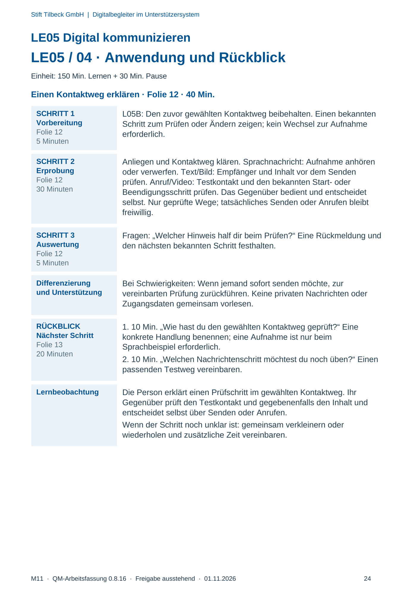

M11 · Originalseite 21, 22, 23, 24
Durchführungshilfe
Gezielte Original-Druckauswahl.
Fragen und Ankreuzfelder werden auf dem Ausdruck bearbeitet. Die Lesefassung speichert keine Antworten.
Lesefassung · Seite 21
Stift Tilbeck GmbH | Digitalbegleiter im Unterstützersystem
LE05 Digital kommunizieren
MOD05A · Vorbereitung und Orientierung
Einheit: 150 Min. Lernen + 30 Min. Pause
Kompetenzziel Lernziel: Ich erprobe einen Kontaktweg und erkläre einen passenden
Prüfschritt.
Vor dem Start Sprachnachricht als Standardbeispiel mit neutralem Inhalt und
Testkontakt vorbereiten. Für andere gewählte Kontaktwege vorher
einen passenden bekannten Schritt prüfen: Anruf, Text, Bild oder Video.
L05A/B und nur die passenden Gerätewege bereitlegen; keine privaten
Nachrichten.
Material
und Folien
Materialkennungen: L05A, L05B, S01, S04, S07, G05, G06, G07, G08,
G14 · Folien: LE_05_Digitalbegleiter.pptx
Zeitlicher
Rahmen
Ankommen 10 Min. · Entdecken und Erklären 35 Min. · Lernhandlung
45 Min. · Anwendung 40 Min. · Transfer 20 Min. · Pause 30 Min.
Bestandsbezüge Bestandsbezüge: D04, D13, D28, D33.
Originalseite ansehen

Lesefassung · Seite 22
Stift Tilbeck GmbH | Digitalbegleiter im Unterstützersystem
LE05 Digital kommunizieren
LE05 / 02 · Einstieg und gemeinsame Erarbeitung
Einheit: 150 Min. Lernen + 30 Min. Pause
SCHRITT 1
Einstieg
Folie 2
10 Minuten
Fragen:
MODERATIONSIMPULS
„Wann passt ein Anruf, ein Text oder eine Sprachnachricht?“
Verschiedene Vorlieben sammeln; ein Kontaktweg genügt für die
Übung.
SCHRITT 2
Demonstration
Folien 3–4
10 Minuten
Eine neutrale Nachricht aufnehmen: „Wir üben eine Nachricht.“
Testempfänger zeigen, Aufnahme anhören und fragen: „Möchtest du
senden, ändern oder verwerfen?“ Die sendende Person entscheidet.
Nachfragen: Welcher Kontaktweg passt zur Nachricht und zur Person?
SCHRITT 3
Erklären
Folien 5–7
20 Minuten
Folie 5 · Einen Kontaktweg wählen: „Welcher Weg passt zu deinem
Anliegen und deinem Gegenüber?“ Keine Rangfolge zwischen
Schreiben, Sprechen oder Video bilden.
Folie 6 · Vor dem Senden prüfen: Empfänger und Aufnahme sichtbar
prüfen: „Ist das der vereinbarte Testkontakt? Ist das die gewünschte
Nachricht?“
Folie 7 · Verständlich zeigen: Nur einen Prüfschritt des gewählten Wegs
erklären. Die Person bedient selbst und trifft die Entscheidung über das
Senden.
SCHRITT 4
Auswertung
Folie 8
5 Minuten
Vor dem Senden stoppen:
MODERATIONSIMPULS
„Welche zwei Dinge prüfen wir?“
Als mögliche Antwort Empfänger und Inhalt aufnehmen und am Gerät
zeigen lassen. Die Folienaufnahme ist ein Standardbeispiel; beim
gewählten Kontaktweg bleiben.
Differenzierung
und Unterstützung
Bei Schwierigkeiten: Wenn der Aufnahmeweg ungewohnt ist, zunächst
nur Anhören und Verwerfen üben. Ein tatsächliches Senden ist nicht
nötig.
PAUSE
Folie 9
15 Minuten
Pause ohne Arbeitsauftrag.
Originalseite ansehen

Lesefassung · Seite 23
Stift Tilbeck GmbH | Digitalbegleiter im Unterstützersystem
LE05 Digital kommunizieren
MOD05B · Erste Erprobung in Paaren
Einheit: 150 Min. Lernen + 30 Min. Pause
Mein Kontaktweg · Folie 10 · 45 Min.
SCHRITT 1
Auftrag
Folie 10
5 Minuten
L05A: Einen Kontaktweg und Rollen wählen. Neutralen Inhalt sowie
Testempfänger ausdrücklich vereinbaren.
SCHRITT 2
Demonstration
Folie 10
5 Minuten
Aufnahme mit freiwilliger Person vorführen, anhören und Empfänger
prüfen. Sie entscheidet selbst, ob gesendet wird.
SCHRITT 3
Paararbeit
Folie 10
30 Minuten
Paare erproben ihren vorbereiteten Kontaktweg. Vor jeder
Sendentscheidung fragen: „An wen geht das? Was ist enthalten?“ Nur
vereinbarte Testkontakte nutzen.
SCHRITT 4
Auswertung
Folie 10
5 Minuten
Fragen:
MODERATIONSIMPULS
„Wer hat über die Nachricht entschieden? Was wurde vorher
geprüft?“
Differenzierung
und Unterstützung
Bei Schwierigkeiten: Bei unsicherem Testkontakt keine Nachricht
senden. Mit einer gespeicherten neutralen Aufnahme weiterüben.
PAUSE
Folie 11
15 Minuten
Pause ohne Arbeitsauftrag.
Originalseite ansehen

Lesefassung · Seite 24
Stift Tilbeck GmbH | Digitalbegleiter im Unterstützersystem
LE05 Digital kommunizieren
LE05 / 04 · Anwendung und Rückblick
Einheit: 150 Min. Lernen + 30 Min. Pause
Einen Kontaktweg erklären · Folie 12 · 40 Min.
SCHRITT 1
Vorbereitung
Folie 12
5 Minuten
L05B: Den zuvor gewählten Kontaktweg beibehalten. Einen bekannten
Schritt zum Prüfen oder Ändern zeigen; kein Wechsel zur Aufnahme
erforderlich.
SCHRITT 2
Erprobung
Folie 12
30 Minuten
Anliegen und Kontaktweg klären. Sprachnachricht: Aufnahme anhören
oder verwerfen. Text/Bild: Empfänger und Inhalt vor dem Senden
prüfen. Anruf/Video: Testkontakt und den bekannten Start- oder
Beendigungsschritt prüfen. Das Gegenüber bedient und entscheidet
selbst. Nur geprüfte Wege; tatsächliches Senden oder Anrufen bleibt
freiwillig.
SCHRITT 3
Auswertung
Folie 12
5 Minuten
Fragen: „Welcher Hinweis half dir beim Prüfen?“ Eine Rückmeldung und
den nächsten bekannten Schritt festhalten.
Differenzierung
und Unterstützung
Bei Schwierigkeiten: Wenn jemand sofort senden möchte, zur
vereinbarten Prüfung zurückführen. Keine privaten Nachrichten oder
Zugangsdaten gemeinsam vorlesen.
RÜCKBLICK
Nächster Schritt
Folie 13
20 Minuten
1. 10 Min. „Wie hast du den gewählten Kontaktweg geprüft?“ Eine
konkrete Handlung benennen; eine Aufnahme ist nur beim
Sprachbeispiel erforderlich.
2. 10 Min. „Welchen Nachrichtenschritt möchtest du noch üben?“ Einen
passenden Testweg vereinbaren.
Lernbeobachtung Die Person erklärt einen Prüfschritt im gewählten Kontaktweg. Ihr
Gegenüber prüft den Testkontakt und gegebenenfalls den Inhalt und
entscheidet selbst über Senden oder Anrufen.
Wenn der Schritt noch unklar ist: gemeinsam verkleinern oder
wiederholen und zusätzliche Zeit vereinbaren.
Originalseite ansehen
